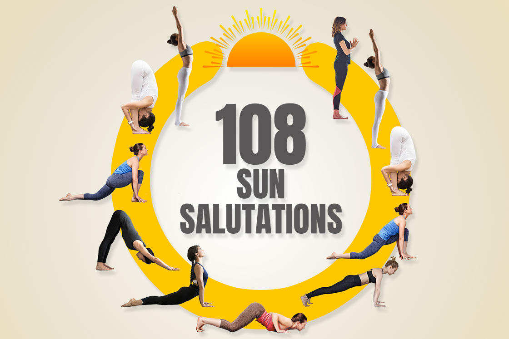

I have a rule about saying yes to things that scare me. I read it somewhere. If something scares you, you should probably do it. That rule has led me to cold plunges, sound baths, and now, apparently, to doing 108 sun salutations on a summer solstice morning at Casa de Luz, completely fasted, with about fifty other people who all seemed much more flexible than me.
The thing about 108 is that it's a sacred number in yoga. It shows up everywhere. 108 beads on a mala. 108 breaths in some meditations. 108 sun salutations is a common practice for solstices and equinoxes. I had never done it before. I had done maybe ten sun salutations in a row, maximum. I was not prepared for what 108 actually feels like.
I showed up at Casa de Luz at 7 AM. The sun was already brutal. Austin in June is no joke. The temperature was already in the 80s and climbing. I had been fasting since 6 PM the night before, so about 13 hours. I felt clear but also a little empty. I thought that would help me focus. I was wrong.
The facilitator led us through a warm‑up, then we started. The first ten salutations felt fine. My body was warming up, my breathing was steady, I felt energized. By number twenty, I was sweating. By number thirty, my arms were shaking. By number forty, I was questioning my life choices. I looked around. Everyone else seemed to be doing fine. I felt like I was the only one struggling. I told myself to keep going.
Number fifty was a turning point. I stopped thinking about the number and started thinking about the movement. Inhale, arms up. Exhale, forward fold. Inhale, half lift. Exhale, plank. Chaturanga, upward dog, downward dog. The sequence became automatic. My body knew what to do even when my brain was screaming. I noticed that my breathing had synchronized with the rhythm. I wasn't gasping anymore. I was just moving.
Number seventy was when the fasting hit me. I felt lightheaded. Not dizzy, just floaty. Like I was disconnected from my body. I slowed down. I took an extra breath between each salutation. The facilitator noticed and gave me a nod. She didn't tell me to stop. She just acknowledged that I was adjusting.
Number ninety was the hardest. My muscles were burning. My arms felt like they weighed a hundred pounds. My legs were trembling. I wanted to stop. I wanted to lie down on my mat and cry. But I was so close. Eighteen more. I could do eighteen more. I focused on my breath. Inhale, arms up. Exhale, forward fold. One by one.
Number one hundred and eight. The final one. I don't remember doing it. I just remember lying on my mat afterward, staring at the ceiling, trying to remember my own name. I was drenched in sweat. My heart was pounding. But I had done it. I had done all 108.
The immediate aftermath was a blur. I drank water. I ate a small snack that someone handed me. I sat in the shade and tried to cool down. My body was buzzing. I felt like I had run a marathon and then done a crossword puzzle. My mind was quiet. My body was exhausted.
The next morning, I couldn't walk. Not like, I needed a wheelchair. But I walked like a penguin. My hamstrings were so tight that I couldn't straighten my legs. My shoulders were locked up. My core felt like it had been replaced with concrete. I spent the whole day on the couch, moving as little as possible.
Day two was worse. The stiffness peaked. My quads were screaming. I tried to do a gentle stretch, but it made everything worse. I just lay there and let my body recover. I also ate a lot of protein and drank a lot of water. I was surprised at how hungry I was. The fast had been broken, but my body was demanding fuel.
Day three, I could walk again. Not normally, but close. I was still sore, but I could move without wincing. I took my first walk around the block. It felt like a victory.
Day four, I was almost back to normal. I did a gentle yoga session that felt like a massage compared to the solstice event. I realized that the 108 salutations had been a form of extreme conditioning. My body was stronger now, even though it had hurt so much.
I learned a few things from the experience. First, fasting and intense physical activity can be a powerful combination, but you have to respect your limits. I pushed myself hard, and I'm glad I did, but I could have injured myself. If I do it again, I'll eat something small beforehand, even if it breaks the fast.
Second, recovery is not optional. I spent three days doing almost nothing, and that was the right call. Your body needs time to repair itself. Ignoring that is how you get injured.
Third, there's something to be said for doing hard things. The sense of accomplishment from finishing 108 sun salutations is still with me. It was uncomfortable, painful, and exhausting. But I did it. And that gives me confidence to try other hard things.
Fourth, community matters. I couldn't have finished it alone. The energy of the group, the facilitator's guidance, and the simple fact that I was surrounded by people who were also suffering made it possible. That's something I want to hold onto.
I also learned that my body can do more than I think it can. I had never done more than ten sun salutations. I did ten times that. Not because I'm strong, but because I didn't stop. That's the lesson.
If you're thinking about doing 108 sun salutations, here's my advice. Train for it. Build up to it over a few weeks. Don't just show up and hope for the best. And if you're fasting, be careful. Your blood sugar might drop. Your energy might flag. Listen to your body. There's no shame in taking a break.
I'm not sure I'll do it again next year. Maybe. The memory of the pain is still fresh. But the memory of the accomplishment is also strong. I might just do it to prove to myself that I can.
— Maya, East Austin
P.S. My roommate asked me why I was walking funny. I told her I had done 108 sun salutations. She said "That sounds like a cult thing." I said "It's a yoga thing." She said "Same thing." I didn't argue.